Candidate List 20260916Last night — ZTF: 3,719 passed basic cuts (128 young) · LSST: 0 passed basic cuts (0 young)Previous Day Next Day
Section 1: New Sources (age<1d) Section 2: Old (1-5d) sources observed last nightplaceholder
Section 1: New Afterglow/FBOT Cands Last Night (1)
1. [ZTF] ZTF26abvduse (Afterglow?) [Back to Top] [Share] [Trigger Swift] [Fritz Alert] [Fritz Source] [Lasair]RA, Dec: 286.4485, -11.12137 19h 5m47.64s, -11d-7m-16.91sGalactic (l, b): 24.58634, -8.19949 ext(g-r) = 0.431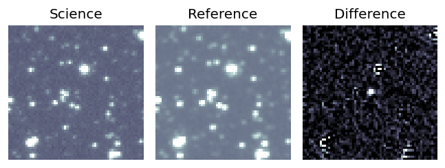
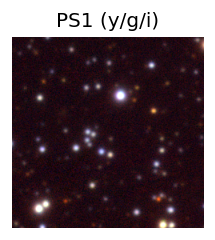

TESS: Sectors [80 92]
PS1: 0 sources in 3 arcsec
LegacySurvey: 0 sources in 3 arcsec
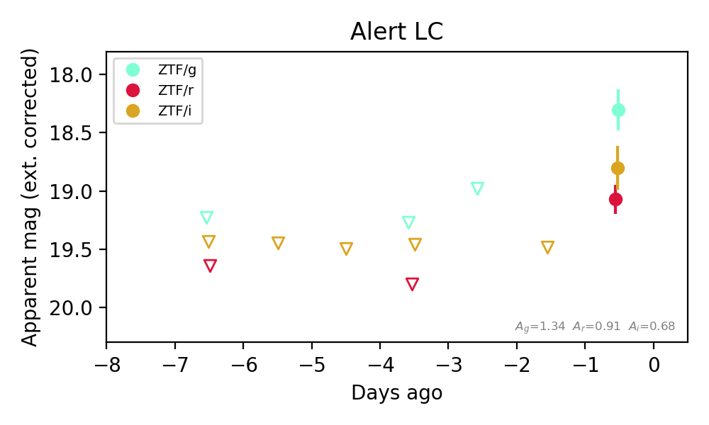
Extinction-corrected gr color:
From alerts: -0.77 +/- 0.22 mag
Extinction-corrected gi color:
From alerts: -0.5 +/- 0.26 mag
Extinction-corrected ri color:
From alerts: 0.27 +/- 0.23 mag
Consistent with synchrotron, g-r>0!
Rise Rate:
g: 0.33 mag/day
r: 0.25 mag/day
i: 0.66 mag/day
Fade Rate:
Section 2: Older Sources Observed Last Night (12)
0. [ZTF] ZTF26abtijze (FBOT?) [Back to Top] [Share] [Trigger Swift] [Fritz Alert] [Fritz Source] [Lasair]RA, Dec: 352.20664, 25.59287 23h28m49.59s, 25d35m34.33sGalactic (l, b): 100.46637, -33.64953 ext(g-r) = 0.07


TESS: Sectors [56 83]
PS1: 0 sources in 3 arcsec
LegacySurvey: 1 sources in 3 arcsec Closest: d = 0.54 arcsec, 124.0 deg (east of north) photoz=0.9 (68% bounds 0.72, 1.07), type=REX peak abs mag (ext. corrected) = -24.62 (68% bounds -24.03, -25.07)

Extinction-corrected gr color:
From alerts: -0.31 +/- 0.15 mag
Rise Rate:
g: 0.23 mag/day
r: 0.21 mag/day
Fade Rate:
1. [ZTF] ZTF26abttgxn (Afterglow?) [Back to Top] [Share] [Trigger Swift] [Fritz Alert] [Fritz Source] [Lasair]RA, Dec: 19.0427, 16.15181 1h16m10.25s, 16d 9m6.51sGalactic (l, b): 131.54506, -46.3059 ext(g-r) = 0.132


TESS: Sectors [17 42 43 57 70]
SDSS (<15 kpc):Found SDSS phot-z: z=0.08; peak abs mag = -18.86
PS1: 0 sources in 3 arcsec
LegacySurvey: 1 sources in 3 arcsec Closest: d = 9.21 arcsec, 11.3 deg (east of north) photoz=0.11 (68% bounds 0.09, 0.15), type=REX peak abs mag (ext. corrected) = -19.54 (68% bounds -19.13, -20.35)

Extinction-corrected gr color:
From alerts: -0.13 +/- 0.15 mag
Extinction-corrected gi color:
From alerts: -0.74 +/- 99 mag
Extinction-corrected ri color:
From alerts: -0.61 +/- 99 mag
Consistent with synchrotron, g-r>0!
Rise Rate:
g: 1.25 mag/day
r: 0.23 mag/day
i: 0.17 mag/day
Fade Rate:
i: 0.2 mag/day
2. [ZTF] ZTF26abthpmr (Afterglow?FBOT?) [Back to Top] [Share] [Trigger Swift] [Fritz Alert] [Fritz Source] [Lasair]RA, Dec: 346.10758, 35.40859 23h 4m25.82s, 35d24m30.93sGalactic (l, b): 99.5254, -22.55293 ext(g-r) = 0.082


TESS: Sectors [16 56 83]
PS1: 1 source in 3 arcsec Closest: d = 1.64 arcsec photoz=0.53+/-0.09 peak abs mag = -23.65
LegacySurvey: 0 sources in 3 arcsec

Extinction-corrected gr color:
From alerts: -0.21 +/- 0.11 mag
Extinction-corrected gi color:
From alerts: -0.34 +/- 0.14 mag
Extinction-corrected ri color:
From alerts: -0.12 +/- 0.14 mag
Consistent with synchrotron, g-r>0!
Rise Rate:
g: 0.07 mag/day
r: 0.57 mag/day
i: 0.06 mag/day
Fade Rate:
3. [ZTF] ZTF26abueptz (FBOT?) [Back to Top] [Share] [Trigger Swift] [Fritz Alert] [Fritz Source] [Lasair]RA, Dec: 44.81169, 1.07415 2h59m14.80s, 1d 4m26.94sGalactic (l, b): 175.60225, -48.28509 ext(g-r) = 0.081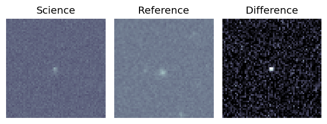
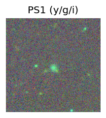
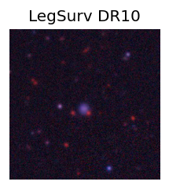
TESS: Sectors [ 4 109]
SDSS (<15 kpc):Found SDSS phot-z: z=0.09; peak abs mag = -18.89
PS1: 0 sources in 3 arcsec
LegacySurvey: 1 sources in 3 arcsec Closest: d = 2.26 arcsec, 170.1 deg (east of north) photoz=0.12 (68% bounds 0.1, 0.14), type=REX peak abs mag (ext. corrected) = -19.51 (68% bounds -18.98, -19.83)
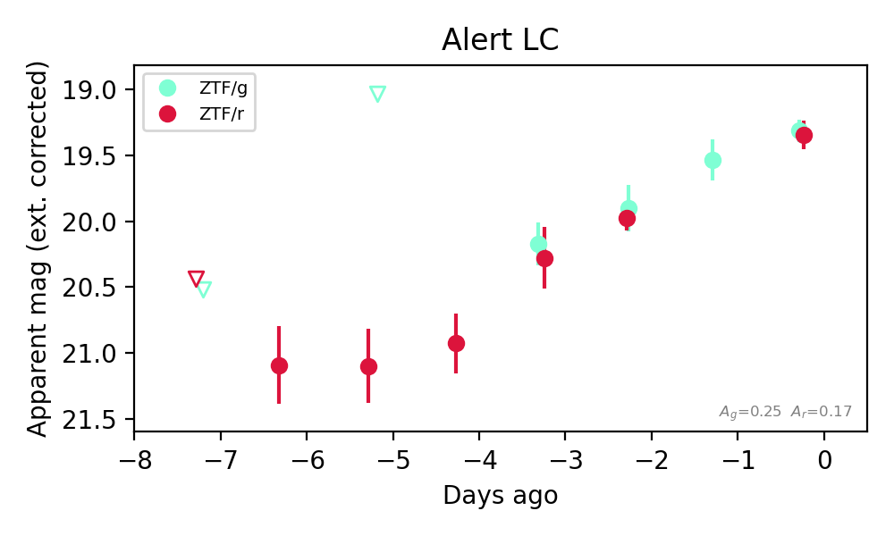
Extinction-corrected gr color:
From alerts: -0.03 +/- 0.14 mag
Consistent with synchrotron, g-r>0!
Rise Rate:
g: 0.28 mag/day
r: 0.33 mag/day
Fade Rate:
4. [ZTF] ZTF26abukalo (FBOT?) [Back to Top] [Share] [Trigger Swift] [Fritz Alert] [Fritz Source] [Lasair]RA, Dec: 281.25881, 32.94381 18h45m2.12s, 32d56m37.70sGalactic (l, b): 62.36396, 15.59491 ext(g-r) = 0.08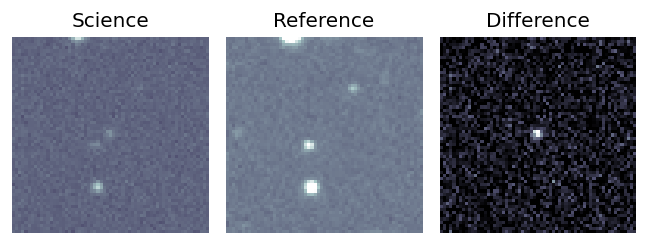
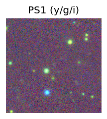

TESS: Sectors [ 26 53 54 74 80 81 118 119]
PS1: 1 source in 3 arcsec Closest: d = 5.93 arcsec photoz=0.87+/-0.09 peak abs mag = -24.24
LegacySurvey: 0 sources in 3 arcsec
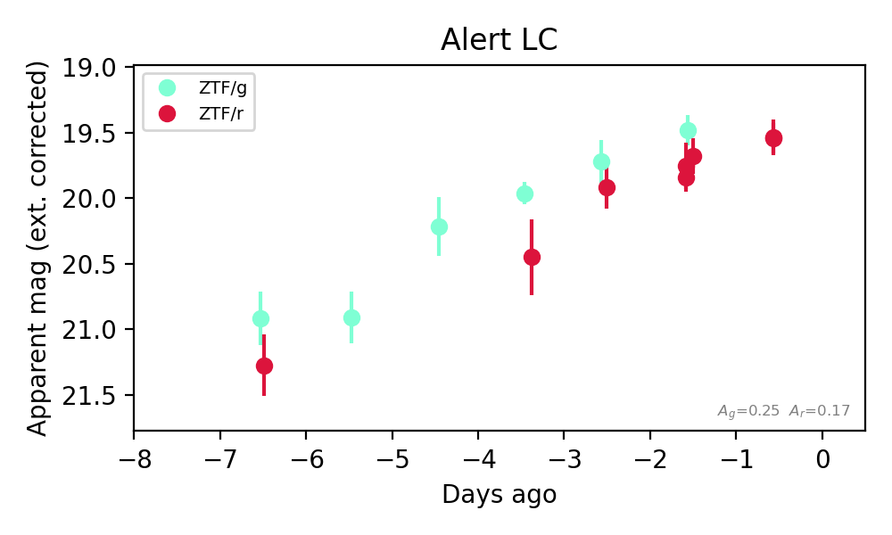
Extinction-corrected gr color:
From alerts: -0.29 +/- 0.14 mag
Rise Rate:
g: 0.31 mag/day
r: 0.29 mag/day
Fade Rate:
5. [ZTF] ZTF26abupccs (Afterglow?) [Back to Top] [Share] [Trigger Swift] [Fritz Alert] [Fritz Source] [Lasair]RA, Dec: 19.69372, 14.99186 1h18m46.49s, 14d59m30.71sGalactic (l, b): 132.7019, -47.36064 ext(g-r) = 0.055


TESS: Sectors [17 42 43 70]
NED host (10 arcsec):Found SDSS J011846.46+145922.8 (G, 7.9″); NED spec-z: z=0.0228 [zflag SLS]; peak abs mag = -15.95
PS1: 0 sources in 3 arcsec
LegacySurvey: 1 sources in 3 arcsec Closest: d = 8.01 arcsec, 181.0 deg (east of north) photoz=0.01 (68% bounds 0.01, 0.02), type=REX peak abs mag (ext. corrected) = -14.72 (68% bounds -13.64, -16.0)

Extinction-corrected gr color:
From alerts: 0.61 +/- 0.24 mag
Extinction-corrected gi color:
From alerts: 0.95 +/- 0.23 mag
Extinction-corrected ri color:
From alerts: 0.34 +/- 0.14 mag
Consistent with synchrotron, g-r>0!
Rise Rate:
g: 0.48 mag/day
r: 1.13 mag/day
i: 0.24 mag/day
Fade Rate:
6. [ZTF] ZTF26abuktjp (Afterglow?) [Back to Top] [Share] [Trigger Swift] [Fritz Alert] [Fritz Source] [Lasair]RA, Dec: 312.71175, 64.34756 20h50m50.82s, 64d20m51.20sGalactic (l, b): 100.29855, 12.66549 ext(g-r) = 0.55


TESS: Sectors [ 15 17 18 24 56 57 58 76 77 78 83 84 85 121]
PS1: 1 source in 3 arcsec Closest: d = 3.55 arcsec photoz=0.04+/-0.03 peak abs mag = -19.15
LegacySurvey: 0 sources in 3 arcsec

Extinction-corrected gr color:
From alerts: 0.1 +/- 0.29 mag
Consistent with synchrotron, g-r>0!
Rise Rate:
g: 1.97 mag/day
r: 0.26 mag/day
Fade Rate:
g: 0.68 mag/day
7. [ZTF] ZTF26abvcyoo (FBOT?) [Back to Top] [Share] [Trigger Swift] [Fritz Alert] [Fritz Source] [Lasair]RA, Dec: 73.08491, 5.15068 4h52m20.38s, 5d 9m2.44sGalactic (l, b): 193.47362, -23.53051 ext(g-r) = 0.098


TESS: Sectors [ 5 32 98 110]
NED host (10 arcsec):Found CGCG 420-010 (G, 5.4″); NED spec-z: z=0.0298 [zflag S1L]; peak abs mag = -17.59
PS1: 0 sources in 3 arcsec
LegacySurvey: 1 sources in 3 arcsec Closest: d = 1.55 arcsec, 41.2 deg (east of north) photoz=0.08 (68% bounds 0.06, 0.12), type=SER peak abs mag (ext. corrected) = -19.8 (68% bounds -19.16, -20.67)

Rise Rate:
g: 0.98 mag/day
r: 0.39 mag/day
Fade Rate:
8. [ZTF] ZTF26abvdlgm (FBOT?) [Back to Top] [Share] [Trigger Swift] [Fritz Alert] [Fritz Source] [Lasair]RA, Dec: 298.32958, 0.38796 19h53m19.10s, 0d23m16.65sGalactic (l, b): 40.47696, -13.55027 ext(g-r) = 0.2


TESS: Sectors [54 81]
SDSS (<15 kpc):Found SDSS phot-z: z=0.18; peak abs mag = -19.98
PS1: 0 sources in 3 arcsec
LegacySurvey: 0 sources in 3 arcsec

Extinction-corrected gr color:
From alerts: -0.76 +/- 99 mag
Extinction-corrected ri color:
From alerts: 1.17 +/- 99 mag
Rise Rate:
r: 0.43 mag/day
Fade Rate:
9. [ZTF] ZTF26abveqil (Afterglow?) [Back to Top] [Share] [Trigger Swift] [Fritz Alert] [Fritz Source] [Lasair]RA, Dec: 340.06716, 49.47138 22h40m16.12s, 49d28m16.98sGalactic (l, b): 102.11252, -8.02409 ext(g-r) = 0.2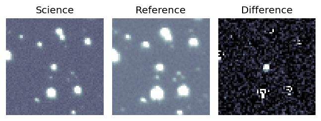
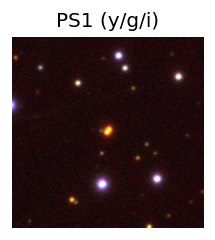

TESS: Sectors [16 17 56 57 76 77 83 84]
PS1: 1 source in 3 arcsec Closest: d = 0.63 arcsec photoz=0.63+/-0.08 peak abs mag = -23.98
LegacySurvey: 0 sources in 3 arcsec
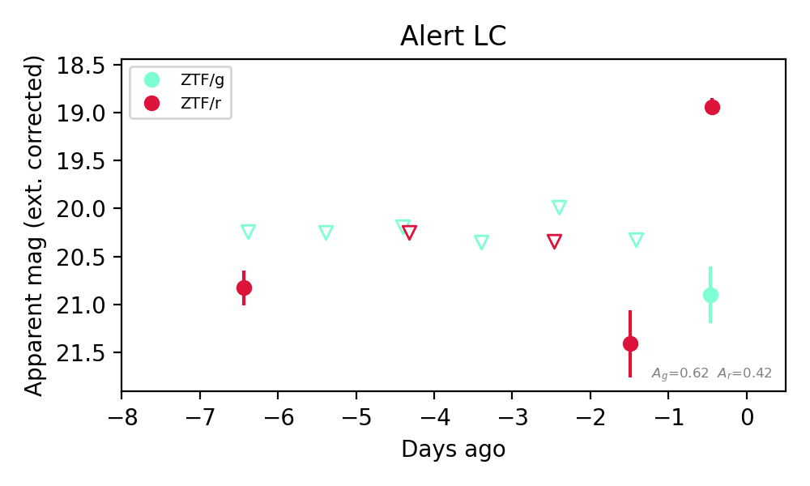
Extinction-corrected gr color:
From alerts: 1.96 +/- 0.31 mag
Consistent with synchrotron, g-r>0!
Rise Rate:
r: 0.69 mag/day
Fade Rate:
10. [ZTF] ZTF26abvgtlj (FBOT?) [Back to Top] [Share] [Trigger Swift] [Fritz Alert] [Fritz Source] [Lasair]RA, Dec: 5.2899, -11.87776 0h21m9.57s, -11d-52m-39.94sGalactic (l, b): 96.48476, -73.17542 ext(g-r) = 0.038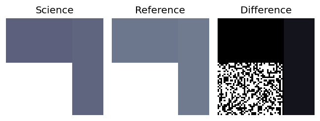
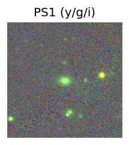
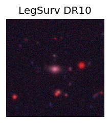
TESS: Sectors 3
SDSS (<15 kpc):Found SDSS phot-z: z=0.32; peak abs mag = -21.08
PS1: 0 sources in 3 arcsec
LegacySurvey: 1 sources in 3 arcsec Closest: d = 1.05 arcsec, 167.6 deg (east of north) photoz=0.27 (68% bounds 0.26, 0.29), type=SER peak abs mag (ext. corrected) = -20.67 (68% bounds -20.52, -20.81)
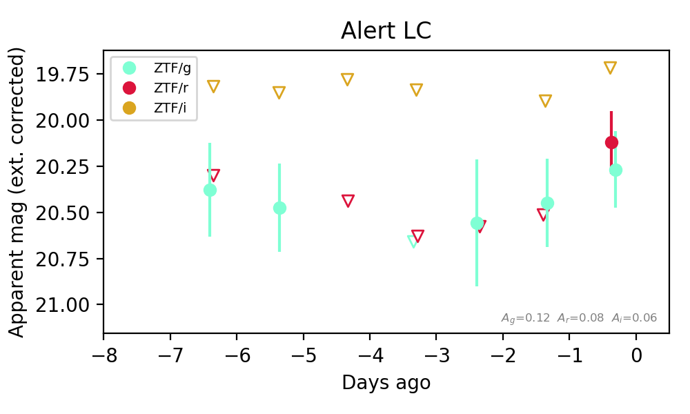
Extinction-corrected gr color:
From alerts: 0.15 +/- 0.27 mag
Extinction-corrected gi color:
From alerts: 0.55 +/- 99 mag
Extinction-corrected ri color:
From alerts: 0.41 +/- 99 mag
Consistent with synchrotron, g-r>0!
Rise Rate:
r: 0.38 mag/day
Fade Rate:
11. [ZTF] ZTF26abvjowt (Afterglow?) [Back to Top] [Share] [Trigger Swift] [Fritz Alert] [Fritz Source] [Lasair]RA, Dec: 28.25717, 32.14836 1h53m1.72s, 32d 8m54.09sGalactic (l, b): 137.81674, -28.93694 ext(g-r) = 0.058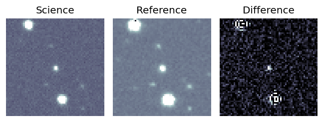
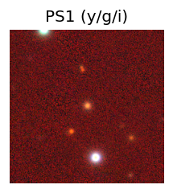
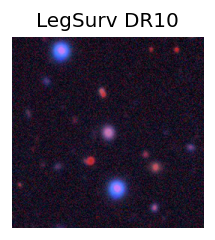
TESS: Sectors 17
SDSS (<15 kpc):Found SDSS phot-z: z=0.13; peak abs mag = -18.76
PS1: 0 sources in 3 arcsec
LegacySurvey: 1 sources in 3 arcsec Closest: d = 0.26 arcsec, 216.3 deg (east of north) photoz=0.16 (68% bounds 0.14, 0.18), type=REX peak abs mag (ext. corrected) = -19.18 (68% bounds -18.82, -19.52)
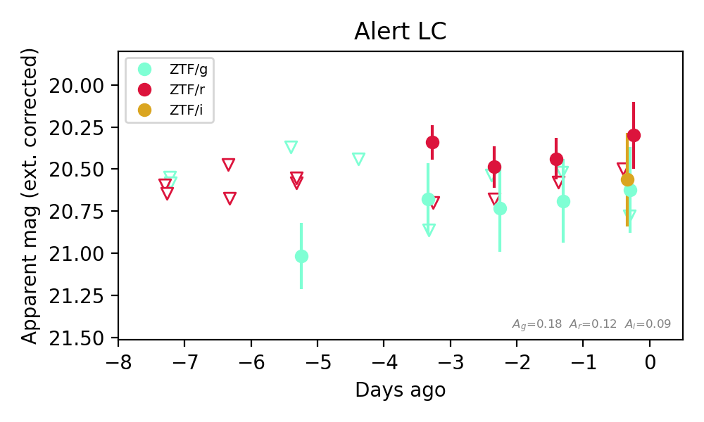
Extinction-corrected gr color:
From alerts: 0.33 +/- 0.32 mag
Extinction-corrected gi color:
From alerts: 0.06 +/- 0.38 mag
Extinction-corrected ri color:
From alerts: -0.26 +/- 0.34 mag
Consistent with synchrotron, g-r>0!
Rise Rate:
r: 0.14 mag/day
Fade Rate:
r: 20.84 mag/day